Szukaj
Sympatia
Gry
VOD
Ogłoszenia
Premium
E-MAIL
Wiadomości
Sport
Premium
...
Biznes
Regionalne
Pogoda
Kultura
Nieruchomości
Motoryzacja
Zakupy
Czas wolny
Sympatia
Styl życia
Technologie
Podróże
Życie gwiazd
Program TV
Gotowanie
Ogłoszenia
Pasjans
premium
E-mail
Wiadomości
Sport
Premium ▾
Kup Onet Premium
good-mousekeeping.pl
Pawsmopolitan
Vanity Fur
Claws&Chronicles
Meowly Mail
Mruczweek
Miautomoto
Strefa premium
Biznes
Regionalne
Pogoda
Wideo i audio
Motoryzacja
Nieruchomości
...
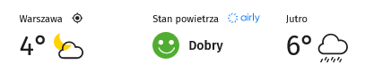
Smog
Program TV
Horoskop
Oferty
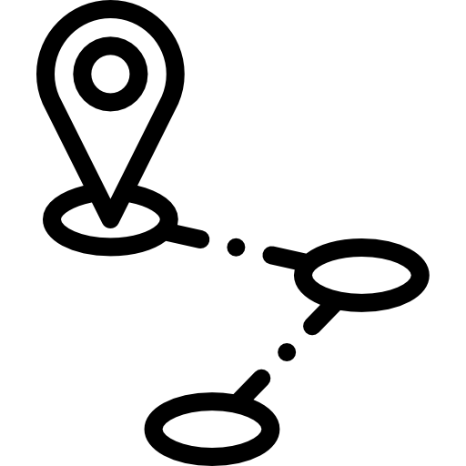
Jak dojadę
Wybrane dla Ciebie
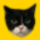
Obserwuj
Komentarz
A jeśli nie trzeba biegać po mieszkaniu o 3:00 z głośnym miaukiem?
Kitku Kota
Lubię to
Zapisz
Udostępnij
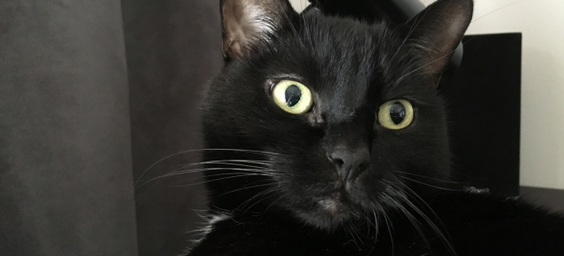
A jeśli nie trzeba biegać po mieszkaniu o 3:00 z głośnym miaukiem?
Weekend z Onetem
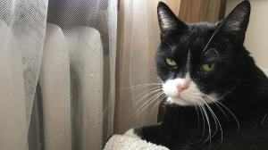
Ludzka stopa posiada łącznie z kostką 26 kości, 33 stawy i ponad 100 mięśni.
Lubię to
Zapisz
Udostępnij
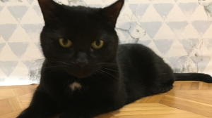
Zorza polarna występuje na Ziemi, Saturnie, Jowiszu, Uranie i Neptunie.
Lubię to
Zapisz
Udostępnij
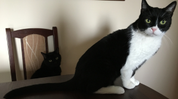
Według szacunków, co dziesiąty mieszkaniec Centralnej Azji jest potomkiem Czyngis – chana.
Lubię to
Zapisz
Udostępnij
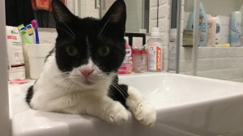
Język kameleona jest dwukrotnie dłuższy od jego ciała.
Lubię to
Zapisz
Udostępnij
Wiadomości
Premium
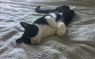
Krokodyle połykają kamienie w celu możliwości głębszego zanudzenia się w wodzie.
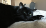
Żeby wejść na Wieżę Eiffla trzeba pokonać 1710 stopni.
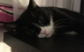
Nietoperze wylatujące z jaskini zawsze kierują się w lewą stronę.
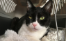
Misie koala mogą spać nawet 20 godzin dziennie.
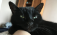
Kiwi to owoc, który dostarcza najwięcej witaminy C.
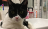
Wszystkie koty mają unikalne odciski nosa.
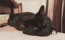
TYLKO W ONECIE
Prawo Alaski mówi, że nie można patrzeć na łosia z samolotu.
Wybrane dla Ciebie
Otwarto nowe połączenie kolejowe! Nasza reporterka jest już na miejscu.
Lubię to
Zapisz
Udostępnij
Kocie sprawy
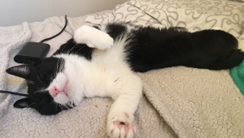
Test drapaków (w tym zasłon, foteli i kanap).
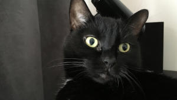
Gubienie sierści: jak rozpoznać najdroższe ubranie człowieka?
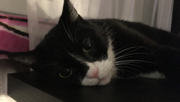
Jak robić jeszcze głośniejsze "meow"?
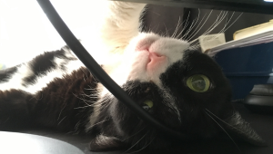
7 oznak, że przeholowałeś z kocimiętką.
W Szwajcarii nielegalne jest posiadanie tylko jednej świnki morskiej. Musisz mieć minimum dwie.
Brytyjska rodzina królewska nie może grać w Monopoly.
Szczury i konie nie mogą wymiotować.
Elektryczne krzesło zostało wynalezione przez dentystę.
Wiadomości
Kotopuszki i saszety
Uprawa kocimiętki
Świat
Ładne futerko
Tresura ludzi
Głośne meow
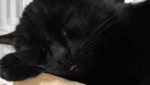
Spanko: jak często robić przerwy w spaniu?
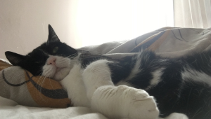
Kot ma 32 mięśnie w każdym uchu.
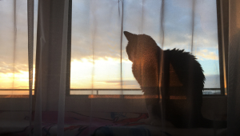
Logo Chupa Chups zostało zaprojektowane przez Salvadora Dalí.
Wiadomości
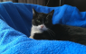
Langusta żywi się wyłącznie owocami morza, choć gdyby mogła, jadłaby dżem.
Puszcza Białowieska jest najstarszym lasem w Europie.
W Korei Północnej nie można kupić Coca-Coli.
20% tlenu na Ziemi produktowane jest przez amazońskie lasy deszczowe.
Dzieci mają około 100 kości więcej niż dorośli.
Lokalnie
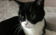
Rosomak jest jednym z najagresywniejszych drapieżników Europy.
Heroina była kiedyś reklamowana jako lekarstwo na kaszel.
Lato na Neptunie trwa 40 lat. Temperatura jednak spada do -200°C.
Warszawa
Dzisiaj
Prognoza pogody
15 °
Odczuwalna: 15 ℃
Zachmurzenie umiarkowane
Deszcz:
0.0 mm
Zachmurzenie:
51%
Wiatr:
5.6 km/h
Wilgotność:
56%
Ciśnienie atmosf.::
1019 hPa
Śnieg:
a dajcie spokój
Wybrane dla Ciebie
Sport
Gonitwa za laserem
Spanko
Wbijanie pazurków w drogie kanapy
Strącanie przedmiotów
Parkour po mieszkaniu
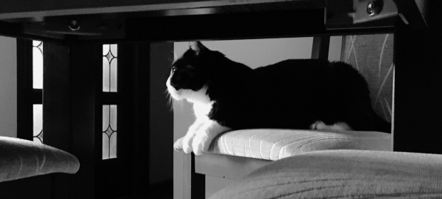
Ryk lwa słychać już z odległości 8 kilometrów.
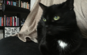
Krokodyl nie może wystawić języka.
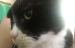
Ptaki potrzebują grawitacji, aby połykać swoje pożywienie.
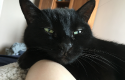
Prędkość maksymalna rekinów to 70 km/h.
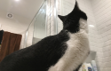
Wiatr nie wydaje dźwięku, dopóki nie uderzy w jakiś obiekt.
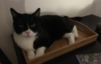
Źrenica ośmiornicy i kozy jest prostokątna.
Premium
Onet Premium
Pawsmopolitan
good-mousekeeping.pl
Vanity Fur
Claws&Chronicles
Meowly Mail
Mruczweek Polska
Miautomoto
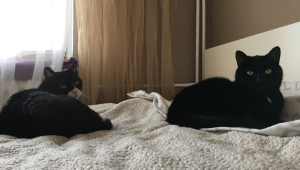
Powierzchnia Księstwa Monako jest mniejsza niż powierzchnia Central Parku.
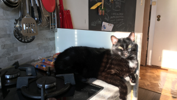
Na Falklandach żyje 200 razy więcej owiec niż ludzi.
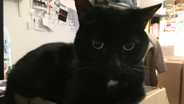
Skorpiony świecą pod ultrafioletowym światłem.
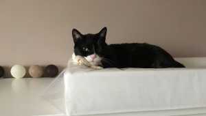
Samice lwa są lepszymi łowcami niż samce.
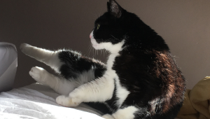
Nietoperze są jedynymi ssakami, które potrafią latać.
Nietoperze są jedynymi ssakami, które potrafią latać.
Samice lwa są lepszymi łowcami niż samce.
Skorpiony świecą pod ultrafioletowym światłem.
Na Falklandach żyje 200 razy więcej owiec niż ludzi.
Powierzchnia Księstwa Monako jest mniejsza niż powierzchnia Central Parku.
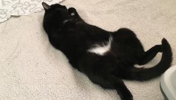
Wrony rozpoznają ludzkie twarze.
Lubię to
Zapisz
Udostępnij
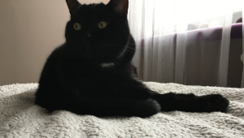
Żaby nie mogą połykać z otwartymi oczami.
Lubię to
Zapisz
Udostępnij
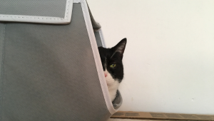
Możliwe jest poprowadzenie krowy po schodach, ale nie w dół.
Lubię to
Zapisz
Udostępnij
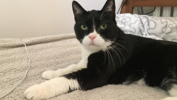
Krew homarów jest bezbarwna, ale pod wpływem tlenu zmienia kolor na niebieski.
Lubię to
Zapisz
Udostępnij
Sport
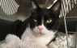
Krowy nie mają górnych przednich zębów.
W przeciwieństwie do ludzi, konie śpią w pozycji stojącej.
Przeciętna kura składa 228 jaj rocznie.
Sprzedam opla
Błyskawice uderzają w Ziemię 6000 razy na minutę.
Ważka ma 6 nóg, ale nie może chodzić.
Więcej ludzi ginie od pszczół niż węży.
85% życia roślinnego znajduje się w oceanie, a nie na ziemi.
Ośmiornice mają trzy serca.
Dęby nie produkują żołędzi, dopóki nie skończą 50 lat.
Cytryny zawierają więcej cukru niż truskawki.
Żyrafa potrafi czyścić uszy językiem.
Oko strusia jest większe niż jego mózg.